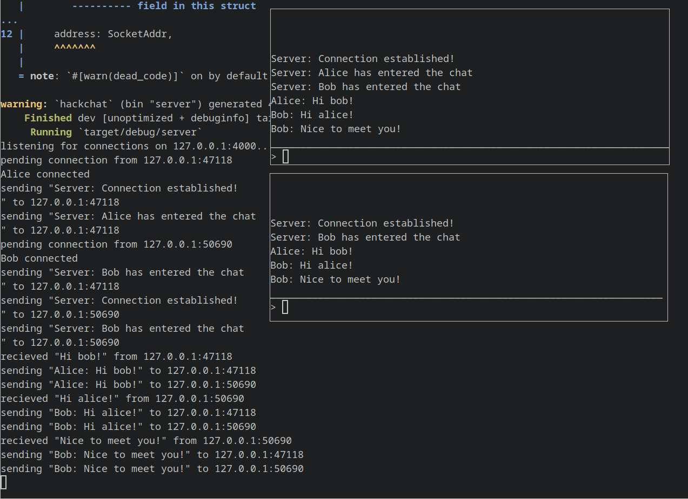

Portfolio
Table of Contents
Introduction
Here I have compiled a subset of the things I have worked on throughout my life. It is certainly not comprehensive and many projects are unfinished. I have included things I have worked on both in school and on my own time.
This Website
I write this site using Emacs org-mode, making good use of its fantastic
export capabilities. My workflow is a little different from how emacs is
configured by default, however. org-publish is sort of set up for someone who
uses a single computer. My workflow involves a plethora of devices. I actively
edit this site on my Macbook, and my desktop running Arch. I can foresee myself
also editing it on my desktop under Windows, or on other laptops running
whatever operating system I decide to run at that time.
Because of this workflow, I wanted to be able to contain all the information
related to this website, including export information, inside of a single
directory tree. This immediately presents challenges, because org-publish
makes use of several global variables which add state to its export functions.
The main variable of concern, however, is org-publish-project-alist. This
variable is intended to contain all projects that you ever work on. In theory,
there are benefits to this, but in practice, it just means my config files for
the website are spread all over my computer.
To solve this, I wrote some elisp which is bound to SPC m P l. Simply put, it
looks for a file named export-config.el in the root directory of your project.
This file defines a varaible called org-publish-project-local-alist, which
does the same thing as org-publish-project-alist, but it’s local (real
complex stuff, I know).
There is one problem though. In the local alist, I can’t use absolute paths,
because that would sort of defeat the purpose of being able to clone the git
repo anywhere and work on it. I don’t really need absolute paths, because all
the files I reference in export-config.el are relative to the website root
directory. But when the publishing function runs, it gets really confused with
the relative paths (especially when using #+include: ... in my files.)
At this point, I pull an India Jones with these two variables and swap them
before calling the org-publish-all function. This publishes the entire website
with a local configuration.
I moved the elisp I wrote for this modification into a separate file which is loaded during startup for emacs. This file is shown below.
1: ;;; org-publish-local.el -*- lexical-binding: t; -*- 2: ;;; 3: ;;; PROGRAMMER: Ethan Smith 4: ;;; 5: ;;; DATE: 5 June 2023 6: ;;; 7: ;;; DESCRIPTION: this file is an extention to org-publish. Project export 8: ;;; configuration is placed in a file caled export-config.el. this file must set 9: ;;; a variable called ~org-publish-local-project-alist~. it should be an alist 10: ;;; in the same format as ~org-publish-project-alist~, for details see its 11: ;;; documentation. The only difference between these two variables is that the 12: ;;; local one may use relative paths for its base directories, and the export 13: ;;; local command will resolve those paths. 14: ;;; 15: ;;; BINDINGS: 16: ;;; "SPC m P l" org-publish-local-project 17: 18: (add-hook 19: 'org-mode-hook 20: (lambda () 21: (evil-define-key '(normal visual) org-mode-map (kbd "SPC m P l") #'org-publish-local-project))) 22: 23: ;;; NOTE: every file in a project is loaded into a buffer, and made current in 24: ;;; the org-publish-to function. That function tries to use existing buffers if 25: ;;; available, otherwise it will just create a new one, temporarily. 26: ;;; 27: ;;; If a buffer already exists, but its path is screwed up, that will screw up 28: ;;; the path of its includes. 29: 30: ;; state variable for local publish function 31: (setq org-publish-local-root nil) 32: (defun org-publish-local-project (project-root) 33: "command to publish projects not listed in ~org-publish-project-alist~. 34: 35: This requrires the project alist to be defined as 36: org-publish-local-alist in a file called export-config.el in the 37: project root directory. When this command is called for the first 38: time during a session, the user will be prompted to select the 39: root directory for their project. This directory is remembered 40: between calls" 41: (interactive (list (if org-publish-local-root org-publish-local-root 42: (setq org-publish-local-root 43: (read-directory-name "Select project root: " ))))) 44: 45: (let ((config-file (concat project-root "export-config.el"))) 46: (when (file-exists-p config-file) 47: ;; file exists, so get the code from it 48: (require 'ox-publish) 49: (load config-file nil nil t) 50: (let (tmp-alist 51: (org-publish-use-timestamps-flag nil) 52: (buffer-directory (file-name-directory (buffer-file-name)))) ; force all files to be published 53: 54: (setq org-publish-local-alist 55: (map 'list 56: (lambda (project) 57: (cons (car project) 58: (publish-local-fix-base-dir org-publish-local-root 59: (cdr project)))) 60: org-publish-local-alist)) 61: 62: ;; the org-publish-expand-project function requires that 63: ;; org-publish-project-alist contain all projects. save the current 64: ;; value of org-publish-project-alist, and restore it after this 65: ;; function is ran. 66: (cl-rotatef org-publish-local-alist org-publish-project-alist) 67: 68: ;; publish all files in the project. NOTE: this might not actually work. 69: ;; (cd org-publish-local-root) 70: (org-publish-all t) 71: ;; (cd buffer-directory) 72: 73: ;; restore project-alist variable 74: (cl-rotatef org-publish-local-alist org-publish-project-alist))))) 75: 76: (defun publish-local-fix-base-dir (root-dir plist) 77: "updates :base-directory in project plist to be a subdirectory of root-dir. 78: 79: if :base-directory is absolute, then then this function simply 80: returns a copy of project. when :base-directory is relative, that 81: key is updated in a copy of project, which is returned. 82: 83: root-dir is the directory where export-config.el is located. It 84: should be in the form of /foo/bar/ 85: 86: project is the project plist" 87: ;;; 88: ;;; org-publish-fix-base-dir 89: ;;; 90: 91: (let ((new-plist (copy-tree plist)) 92: relative-dir) 93: (dolist (key '(:base-directory :publishing-directory) new-plist) 94: (setf relative-dir (plist-get plist key)) 95: (cond ((f-relative-p root-dir) 96: (error "root-dir must be absolute: %S" root-dir)) 97: ;; don't return error if base-directory is nil 98: ((and relative-dir 99: (not (directory-name-p relative-dir))) 100: (error "%S must be a directory. (did you mean %S?)" 101: relative-dir 102: (concat relative-dir "/")))) 103: 104: ;; update key with either expanded or replaced filename 105: (setf new-plist 106: (if (and relative-dir 107: (f-relative-p relative-dir)) 108: (plist-put (copy-tree new-plist) key 109: (expand-file-name relative-dir root-dir)) 110: (copy-tree new-plist)))))) 111: 112: ;; this function is no longer used in this file, but I like it so much, I can't 113: ;; bring myself to delete it. 114: (defun alist-update-key (key value alist) 115: "returns a new alist with the value at key updated. 116: 117: The whole structure of the alist is copied over (ie copy-tree vs 118: copy-list). the result is an alist with key removed, and a new 119: element with key pushed to the front of the alist. " 120: ;;; 121: ;;; alist-update-key 122: ;;; 123: (cons (list key value) 124: (assq-delete-all key (copy-tree alist))))
Courses at Penn State
There were a few classes in that I learned anything of substance during college.
Computer Engineering 472
The coures webpage has a lot of information about the course. Professor Choi updates the course from year to year, so the curriculum posted there probably isn’t exactly what I did.
We spent the semester programming the HC12 Microcontroller in Assembly. We learned about many different programming techniques specific to embedded systems:
- Peripherals
- Memory access/management
- Interrupts
- Using the stack
We were assigned homework every week, which consisted of writing various routines. It was incredibly important to complete these routines because they would be used in subsequent assignments. Many hard lessons about assembly were learned in this class.
Some notable applications we made included a prefix notation calculator and a command line memory editor. I remember my excitement when I punched in the address for the command prompt and changed the symbol from a ’>’ to ’$’!
I have included the code from the first and last homework we completed in this class to show the progression of program complexity.
Homework 1
1: ;*********************************** 2: ;* 3: ;* Title: StarFill (in Memory lane) 4: ;* 5: ;* Objective: COMPEN472 Homework 1 6: ;* 7: ;* Revision: V2 8: ;* 9: ;* Date: 27 Aug 2022 10: ;* 11: ;* Programmer: Ethan Smith 12: ;* 13: ;* Company: The Pennsylvania State University 14: ;* Electrical Engineering and Computer Science 15: ;* 16: ;* Algorithm: Simple while-loop demo of HCS12 assembly program 17: ;* 18: ;* Register use: A accumulator: character data to be filled 19: ;* B accumulator: counter, number of filled locations 20: ;* X register: memory address pointer 21: ;* 22: ;* Memory Use: RAM Locations from $3000 to $30C9 23: ;* 24: ;* Input: Parameters hard coded in the program 25: ;* 26: ;* Output: Data filled in memory locations, from $3000 to $30C9 27: ;* 28: ;* Observation: This program is designed for instruction purpose. 29: ;* This program can be used as a 'loop' template 30: ;* 31: ;* Note: This is a good example of program comments 32: ;* All Homework programs MUST have comments similar 33: ;* to this Homework 1 Program. So, please use this 34: ;* comment format for all your subsequent CMPEN 472 35: ;* Homework programs. 36: ;* 37: ;* Adding more explanations and comments help you and 38: ;* others to understand your program later. 39: ;* 40: ;* Comments: This program is developed and simulated using CodeWarrior 41: ;* development software 42: ;* 43: ;********************************************************* 44: ;* Parameter Declearation Section 45: ;* 46: ;* Export Symbols 47: XDEF Entry ; export 'pgstart' symbol 48: ABSENTRY Entry ; for assembly entry point 49: ;* Symbols and Macros 50: PORTA equ $0000 ; i/o port addresses 51: PORTB equ $0001 52: DDRA equ $0002 53: DDRB equ $0003 54: ;********************************************************* 55: ;* Data Section 56: ;* 57: org $3000 ; reserved memory starting address 58: here DS.B $CA ; 202 memory locations reserved 59: count DC.B $CA ; constant. star count = 202 60: ;********************************************************* 61: ;* Program Section 62: ;* 63: org $3100 ; program start address, in RAM 64: Entry ldaa #'*' ; load '*' into accumulator A 65: ldab count ; load star counter into B 66: ldx #here ; load address pointer into X 67: loop staa 0, x ; put a star 68: inx ; point to next location 69: decb ; decrease counter 70: bne loop ; if not done, repeat 71: done bra done ; task finished 72: ; do nothing 73: 74: ;* 75: ;* Add any subroutines here 76: ;* 77: 78: END ; last line of a file
Homework 11
1: ;;; Title: Analog signal decoder/transmitter and generator 2: ;;; 3: ;;; Objective: CMPEN 472 Homework 11 4: ;;; 5: ;;; Revision: V3.2 for CodeWarrior 5.2 Debugger Simulation 6: ;;; 7: ;;; Date: 30 November 2022 8: ;;; 9: ;;; Programmer: Ethan Smith 10: ;;; 11: ;;; Company: The Pennsylvania State University 12: ;;; Department of Computer Science and Engineering 13: ;;; 14: ;;; Program: Generates waves (saw, triangle, and square), outputting them over serial. 15: ;;; a timer runs in the background 16: ;;; 17: ;;; Algorithm: Command line interface. The user is presented with a command 18: ;;; prompt on which they can type. 19: ;;; 20: ;;; when the user hits enter, their input is validated. 21: ;;; if the input is valid, then it is parsed and evaluated. 22: ;;; otherwise, the program returns an error. 23: ;;; 24: ;;; the clock is run using the RTI interrupt, which increments a counter. 25: ;;; this counter is checked periodically, and when it is 400 (set lower for 26: ;;; sim purposes), 1 second has elapsed, and the seconds/minutes counters are 27: ;;; also updated. 28: ;;; 29: ;;; the waves are generated using the oc5 interrupt. Depending on the type of wave 30: ;;; desired, there are 3 separate ISRs which will be set in the ISR jump vector when 31: ;;; the appropriate command is run. 32: ;;; 33: ;;; the ADC command creates another interrupt routine on oc5 which 34: ;;; reads from the ADC channel 7, and transmits the data to the 35: ;;; terminal 36: ;;; 37: ;;; Register use: Various usages depending on the subroutine. 38: ;;; typically, X is used as input buffer pointer. 39: ;;; D is typically used as the data pointer. 40: ;;; 41: ;;; each subroutine defines stack variables which are used throughout 42: ;;; the subroutine. 43: ;;; 44: ;;; Memory use: RAM Locations from $3000 for data, 45: ;;; RAM Locations after data for program 46: ;;; 47: ;;; RAM Locations from program to 4100 for SP 48: ;;; 49: ;;; 50: ;;; Observation: Clock which counts up and loops around to 0:00 after 9:59 51: ;;; can be set via tty s command. 52: ;;; 53: ;;; clock can be stopped with the quit command 54: ;;; 55: ;;; wave generator works as expected, with the caveat that the clock is slowed down 56: ;;; while the wave is being generated, because the simulator slows down while printing. 57: ;;; 58: ;;; adc command works as expected. ADC channel 7 is sampled at 59: ;;; 8000Hz. it returns 2048 samples worth of data over the 60: ;;; serial output. 61: ;;; 62: ;;;;;;;;;;;;;;;;;;;;;;;;;;;;;;;;;;;;;;;;;;;;;;;;;;;;;;;;;;;;;;;;;;;;;;; 63: ;;; Parameter Declearation Section 64: ;;; 65: ;;; Export Symbols 66: XDEF pstart ; export 'pstart' symbol 67: ABSENTRY pstart ; for assembly entry point 68: 69: ;;; Symbols and Macros 70: PORTA EQU $0000 ; i/o port A addresses 71: DDRA EQU $0002 72: PORTB EQU $0001 ; i/o port B addresses 73: DDRB EQU $0003 74: 75: SCIBDH EQU $00C8 ; Serial port (SCI) Baud Register H 76: SCIBDL EQU $00C9 ; Serial port (SCI) Baud Register L 77: SCICR2 EQU $00CB ; Serial port (SCI) Control Register 2 78: SCISR1 EQU $00CC ; Serial port (SCI) Status Register 1 79: SCIDRL EQU $00CF ; Serial port (SCI) Data Register 80: 81: TIOS EQU $0040 ; Timer Input Capture (IC) or Output Compare (OC) select 82: TIE EQU $004C ; Timer interrupt enable register 83: TCNTH EQU $0044 ; Timer free runing main counter 84: TSCR1 EQU $0046 ; Timer system control 1 85: TSCR2 EQU $004D ; Timer system control 2 86: TFLG1 EQU $004E ; Timer interrupt flag 1 87: TC5H EQU $005A ; Timer channel 5 register 88: 89: CRGFLG EQU $0037 ; Clock and Reset Generator Flags 90: CRGINT EQU $0038 ; Clock and Reset Generator Interrupts 91: RTICTL EQU $003B ; Real Time Interrupt Control 92: 93: ATDCTL2 EQU $0082 ; Analog-to-Digital Converter (ADC) registers 94: ATDCTL3 EQU $0083 95: ATDCTL4 EQU $0084 96: ATDCTL5 EQU $0085 97: ATDSTAT0 EQU $0086 98: ATDDR0H EQU $0090 99: ATDDR0L EQU $0091 100: ATDDR7H EQU $009e 101: ATDDR7L EQU $009f 102: 103: BS equ $08 ; backspace character 104: CR equ $0d ; carriage return, ASCII 'Return' key 105: LF equ $0a ; line feed, ASCII 'next line' character 106: NULL equ $00 ; null terminator 107: 108: DATAmax equ 2048 ; Data count maximum, 1024 constant 109: ;;;;;;;;;;;;;;;;;;;;;;;;;;;;;;;;;;;;;;;;;;;;;;;;;;;;;;;;;;;;;;;;;;;;;;; 110: 111: ;;;;;;;;;;;;;;;;;;;;;;;;;;;;;;;;;;;;;;;;;;;;;;;;;;;;;;;;;;;;;;;;;;;;;;; 112: ;;; Interrupt Vector Section 113: ;;; org $3FF0 ; RTI interrupt vector setup for CSM-128 board 114: org $FFF0 ; RTI interrupt vector setup for the simulator 115: DC.W rtiisr ; place the address of the ISR at this location 116: 117: ORG $FFE4 ; Timer channel 5 interrupt vector setup, on simulator 118: oc5isr DC.W $0000 119: ;;;;;;;;;;;;;;;;;;;;;;;;;;;;;;;;;;;;;;;;;;;;;;;;;;;;;;;;;;;;;;;;;;;;;;; 120: 121: ;;;;;;;;;;;;;;;;;;;;;;;;;;;;;;;;;;;;;;;;;;;;;;;;;;;;;;;;;;;;;;;;;;;;;;; 122: ;;; Data Section: address used [ $3000 to $30FF ] RAM memory 123: ORG $3000 ; Reserved RAM memory starting address 124: ; for Data for CMPEN 472 class 125: 126: ;;; convenience string for sending newlines to terminal 127: NEWLINE DC.B CR, LF, NULL 128: 129: ;;; the menu which is printed when the program first starts 130: MENU DC.B "Wave Generation Program", CR, LF 131: DC.B "use 'gw' to generate a sawtooth wave", CR, LF 132: DC.B "use 'gt' to generate a triangle wave", CR, LF 133: DC.B "use 'gq' to generate a square wave", CR, LF 134: DC.B "use 's M:SS' to set the current time", CR, LF 135: DC.B "use 'q' to quit the program and stop the clock", CR, LF, NULL 136: 137: PROMPT DC.B "HW11> ", NULL 138: QUIT_MSG DC.B "Stopping Clock...", CR, LF 139: DC.B "Typewriter Program Started...", CR, LF, NULL 140: 141: BUFF_ERR DC.B "Buffer Error", CR, LF, NULL 142: FMT_ERR DC.B "Format Error: proper format is 's M:SS'. M=[0,9] SS=[00,59]", CR, LF, NULL 143: FMT_ERR2 DC.B "Format Error: you can only generate sawtooth (gw) triangle (gt) or square (gq) waves", CR, LF, NULL 144: CMD_ERR DC.B "Command Error: valid commands are", CR, LF 145: DC.B " 's' : set time", CR, LF 146: DC.B " 'gw' : sawtooth wave generation", CR, LF 147: DC.B " 'qt' : triangle wave generation", CR, LF 148: DC.B " 'gq' : square wave generation", CR, LF 149: DC.B " 'adc': get and print analog wave", CR, LF 150: DC.B " 'q' : quit", CR, LF, NULL 151: 152: msg3 DC.B "> Be sure to start saving Terminal data: open Output file = RxData3.txt", CR, LF, NULL 153: msg4 DC.B "> press any key to continue...", CR, LF, CR, LF, NULL 154: msg5 DC.B "> Done! Close Output file.", CR, LF, NULL 155: msg6 DC.B "> Ready for next data transmission.", CR, LF, NULL 156: 157: ctr125u DS.W 1 ; 16bit interrupt counter for 125 uSec. of time 158: 159: BUF DS.B 6 ; character buffer for a 16bit number in decimal ASCII 160: CTR DS.B 1 ; character buffer fill count 161: 162: ;;; ADC variables 163: ATDdone DS.B 1 164: 165: ;;; input and output string buffers 166: buffer DS 30 ; 30 bytes for user input 167: 168: ;;; global variables for the current time 169: timem DS.B 1 ; minute 170: times DS.B 1 ; second 171: 172: ctr2p5m DS.W 1 ; interrupt counter for 2.5msec 173: ;;;;;;;;;;;;;;;;;;;;;;;;;;;;;;;;;;;;;;;;;;;;;;;;;;;;;;;;;;;;;;;;;;;;;;; 174: 175: 176: ;;;;;;;;;;;;;;;;;;;;;;;;;;;;;;;;;;;;;;;;;;;;;;;;;;;;;;;;;;;;;;;;;;;;;;; 177: ;;; Program Section: address used [ end of DATA to $3FFF ] RAM memory 178: 179: ;;; char* buffer; 180: ;;; 181: ;;; while(true) { 182: ;;; update_leds(); 183: ;;; print("Clock> "); 184: ;;; read_line(buffer); // get user input 185: ;;; eval_input(buffer); // send user input to eval subroutine 186: ;;; } 187: pstart 188: lds #$4100 ; initialize stack pointer 189: 190: ldaa #%11111111 ; set all PORTA/B bits as output 191: staa DDRB ; | 192: staa DDRA ; | 193: 194: ldaa #%00000000 ; clear PORTA/B 195: staa PORTB ; | 196: staa PORTA ; | 197: 198: ldaa #$0C ; Enable SCI port Tx and Rx units 199: staa SCICR2 ; disable SCI interrupts 200: 201: ldd #$0001 ; Set SCI Baud Register = $0001 => 1.5M baud at 24MHz (for simulation) 202: ; ldd #$0002 ; Set SCI Baud Register = $0002 => 750K baud at 24MHz 203: ; ldd #$000D ; Set SCI Baud Register = $000D => 115200 baud at 24MHz 204: ; ldd #$009C ; Set SCI Baud Register = $009C => 9600 baud at 24MHz 205: std SCIBDH ; SCI port baud rate change 206: 207: ;; RTI ISR configuration 208: bset RTICTL,%00011001 ; set RTI: dev=10*(2**10)=2.555msec for C128 board 209: ; 4MHz quartz oscillator clock 210: bset CRGINT,%10000000 ; enable RTI interrupt 211: bset CRGFLG,%10000000 ; clear RTI IF (Interrupt Flag) 212: 213: ;;; ATD initialization 214: ldaa #%11000000 ; Turn ON ADC, clear flags, Disable ATD interrupt 215: staa ATDCTL2 216: ldaa #%00001000 ; Single conversion per sequence, no FIFO 217: staa ATDCTL3 218: ldaa #%10000111 ; 8bit, ADCLK=24MHz/16=1.5MHz, sampling time=2*(1/ADCLK) 219: staa ATDCTL4 ; for SIMULATION 220: 221: ldx #0 222: stx ctr2p5m ; initialize interrupt counter with 0. 223: cli ; enable interrupt, global 224: 225: ;; print the menu 226: ldx #MENU 227: jsr print 228: 229: ldx #PROMPT 230: jsr print 231: 232: ;; get user input and evaluate the command 233: ldx #buffer ; load input_buffer 234: 235: looop 236: jsr update_LEDs ; make sure clock LEDs are updated 237: ;; prompt the user for a command 238: jsr getchar ; type writer - check the key board 239: cmpa #$00 ; if nothing typed, keep checking 240: beq looop 241: 242: cmpa #CR ; was an enter typed? 243: beq on_enter ; | 244: 245: cmpa #BS ; | was a backspace typed? 246: beq on_backspace ; | 247: 248: cpx #buffer+30 ; is there enough space in the input buffer? 249: bls append ; if yes, append input to input buffer 250: 251: ;; there is not enough space in the buffer, clear it (by reseting X) 252: ;; and report an error 253: clr_buf 254: ldx #NEWLINE ; print a newline 255: jsr print ; | 256: 257: ldx #BUFF_ERR ; print 'invalid command' 258: jsr print ; | 259: 260: ldx #NEWLINE ; print a newline 261: jsr print ; | 262: 263: ldx #PROMPT 264: jsr print 265: 266: ldx #buffer ; reset input_buffer 267: bra looop ; re-enter loop 268: 269: 270: append 271: staa 1,X+ ; store the the typed character, and move the pointer 272: clr X ; null terminate 273: 274: jsr putchar ; display typed character in terminal 275: bra looop ; get next character 276: 277: on_enter 278: ldx #buffer ; set input for evaluate_cmd 279: 280: ldaa X ; if the user just pressed enter, without typing anything 281: cmpa #NULL ; just print a new prompt (don't call evaluate) 282: beq blank_line ; | 283: 284: ;; the user actually typed something 285: jsr eval ; check the command 286: 287: blank_line 288: ldx #NEWLINE ; print a newline 289: jsr print ; | 290: 291: ldx #PROMPT 292: jsr print 293: 294: ldx #buffer ; reset input_buffer 295: clr X ; NULL terminate beginning of input buffer to clear it. 296: 297: bra looop ; get next command 298: 299: on_backspace 300: cpx #buffer ; ensure that there are characters to delete 301: beq looop ; if there is nothing in the buffer, return to looop 302: 303: clr 1,-X ; delete the last character, move pointer 304: pshx ; store this value on stack so we can use X to print stuff 305: 306: ldaa #LF ; move cursor to beginning of line 307: jsr putchar ; | 308: 309: ldx #PROMPT ; print as new prompt 310: jsr print ; | 311: 312: ldx #buffer ; print the input buffer 313: jsr print ; | 314: 315: pulx ; restore current location of cursor in buffer 316: 317: bra looop 318: 319: ;;; subroutine section below 320: 321: ;;; eval 322: ;;; 323: ;;; Program: validates input and executes the command 324: ;;; 325: ;;; Input: X Register: buffer 326: ;;; 327: ;;; Algorithm: 328: ;;; checks if command is s or q. if not, then exit to command error. 329: ;;; 330: ;;; if command is s: 331: ;;; is the rest of the command in this format: M:SS? (where M is [0,9], S is [00,59]) 332: ;;; if so, then set the minutes and seconds variables. 333: ;;; else, exit format error. 334: ;;; 335: ;;; if command is q: 336: ;;; check and make the buffer only contains q 337: ;;; if not, exit command error 338: ;;; else, print quit message, enter typewriter program 339: eval 340: pshx 341: pshy 342: psha 343: 344: ldaa 1,X+ ; A = command (every command is just one character) 345: cmpa #'s' ; does command == 's'? 346: beq eval_set_time ; if so, validate and execute it. 347: 348: cmpa #'g' ; does command == 'g'? 349: beq eval_gen_sig ; if so, validate and execute it. 350: 351: cmpa #'a' ; does command == 'a'? 352: lbeq eval_adc ; if so, see if it is 'adc' 353: 354: cmpa #'q' ; does command == 'q'? 355: lbeq eval_quit ; if so, validate and execute it. 356: 357: ;; the command didn't match anything, so exit failure 358: lbra eval_exit_cmd_error 359: 360: eval_set_time 361: ldaa 1,X+ ; is the input in the format of "s M:SS"? 362: cmpa #' ' ; if not, jump to exit_error 363: lbne eval_exit_error ; else, continue 364: ; | 365: ldaa 1,X+ ; | 366: jsr is_dig ; | 367: lbne eval_exit_error ; | 368: ; | 369: ldaa 1,X+ ; | 370: cmpa #':' ; | 371: lbne eval_exit_error ; | 372: ; | 373: ldaa 1,X+ ; | 374: jsr is_dig ; | 375: lbne eval_exit_error ; | 376: ; | 377: ldaa 1,X+ ; | 378: jsr is_dig ; | 379: lbne eval_exit_error ; | 380: ; | 381: ldaa 1,X+ ; | 382: cmpa #NULL ; | 383: lbne eval_exit_error ; | 384: 385: ;; at this point, we know the buffer is properly formatted 386: ldx 3,SP ; reset buffer pointer 387: leax 4,X ; load address of seconds number 388: jsr atoi ; convert number at address from ascii to integer 389: 390: cpd #59 ; if seconds > 59 then: 391: lbhi eval_exit_error ; invalid time input, exit error 392: 393: stab times ; store lower 8 bits of output to seconds variable 394: 395: ;; store the minutes now that we know the seconds are valid 396: ldx 3,SP ; reset buffer pointer 397: leax 2,X ; load address of first digit 398: ldaa X ; A = first digit 399: suba #$30 ; Convert A from ascii to integer 400: 401: staa timem ; store to minutes variable 402: 403: lbra eval_exit ; exit subroutine 404: 405: eval_gen_sig 406: ldaa 1,X+ 407: cmpa #'w' 408: beq eval_sig_valid 409: cmpa #'t' 410: beq eval_sig_valid 411: cmpa #'q' 412: beq eval_sig_valid 413: lbra eval_exit_error2 414: 415: eval_sig_valid 416: ldaa 1,X- ; move pointer back to the wave specifier 417: cmpa #NULL 418: lbne eval_exit_error2 ; exit error 419: tfr X,Y ; Move X to Y, so X can be used for print 420: 421: ldx #NEWLINE 422: jsr print 423: ldx #msg3 424: jsr print 425: ldx #msg4 426: jsr print 427: 428: eval_sig_get_key 429: jsr update_LEDs 430: jsr getchar 431: cmpa #NULL 432: beq eval_sig_get_key 433: 434: ldx #0 ; reset counter 435: stx ctr125u 436: 437: ldaa Y 438: jsr StartTimer5oc 439: 440: loop2048 441: jsr update_LEDs ; make sure clock LEDs are updated 442: ldd ctr125u 443: cpd #DATAmax ; 1024 bytes will be sent, the receiver at Windows PC 444: bhs loopTxON ; will only take 2048 bytes. 445: bra loop2048 ; set Terminal Cache Size to 10000 lines, update from 1000 lines 446: 447: loopTxON 448: LDAA #%00000000 449: STAA TIE ; disable OC5 interrupt 450: 451: ldx #NEWLINE 452: jsr print 453: jsr print 454: 455: ldx #msg5 ; print '> Done! Close Output file.' 456: jsr print 457: 458: ldx #msg6 ; print '> Ready for next data transmission' 459: jsr print 460: 461: ldx #NEWLINE 462: jsr print 463: 464: bra eval_exit 465: 466: eval_adc 467: ldaa 1,X+ 468: cmpa #'d' 469: bne eval_exit_cmd_error 470: 471: ldaa 1,X+ 472: cmpa #'c' 473: bne eval_exit_cmd_error 474: 475: ldaa 1,X+ 476: cmpa #NULL 477: bne eval_exit_cmd_error 478: 479: ldx #NEWLINE 480: jsr print 481: jsr print 482: 483: eval_adc_get_key 484: jsr update_LEDs 485: jsr getchar 486: cmpa #NULL 487: beq eval_adc_get_key 488: 489: ldx #0 ; reset counter 490: stx ctr125u 491: 492: ldx #NEWLINE 493: jsr print 494: 495: ldaa #'a' 496: jsr StartTimer5oc 497: bra loop2048 498: 499: eval_quit 500: ldaa X 501: cmpa #NULL 502: bne eval_exit_cmd_error 503: 504: sei ; disable interrupts, thus stopping the clock 505: 506: ldx #NEWLINE ; print quit message 507: jsr print ; | 508: ldx #QUIT_MSG ; | 509: jsr print ; | 510: 511: jsr typewriter ; enter typewriter program 512: 513: eval_exit_error 514: ldx #NEWLINE ; print a newline, then the error message 515: jsr print ; | 516: ldx #FMT_ERR ; | 517: jsr print ; | 518: bra eval_exit ; | 519: 520: eval_exit_error2 521: ldx #NEWLINE ; print a newline, then the error message 522: jsr print ; | 523: ldx #FMT_ERR2 ; | 524: jsr print ; | 525: bra eval_exit ; | 526: 527: eval_exit_cmd_error 528: ldx #NEWLINE ; print a newline, then the error message 529: jsr print ; | 530: ldx #CMD_ERR ; | 531: jsr print ; | 532: 533: eval_exit 534: pula 535: puly 536: pulx 537: 538: rts 539: ;;;;;;;;;;;;;;;;;;;;;;;;;;;;;;;;;;;;;;;;;;;;;;;;; 540: 541: ;***********Timer OC5 interrupt service routine*************** 542: oc5isr_saw 543: ldd #3000 ; 125usec with (24MHz/1 clock) 544: addd TC5H ; for next interrupt 545: std TC5H ; 546: bset TFLG1,%00100000 ; clear timer CH6 interrupt flag, not needed if fast clear enabled 547: ldd ctr125u 548: ldx ctr125u 549: inx ; update OC5 (125usec) interrupt counter 550: stx ctr125u 551: clra ; print ctr125u, only the last byte 552: jsr pnum10 ; to make the file RxData3.txt with exactly 1024 data 553: RTI 554: ;***********end of Timer OC5 interrupt service routine******** 555: 556: ;Timer OC5 interrupt service routine*************** 557: oc5isr_tri 558: ldd #3000 ; 125usec with (24MHz/1 clock) 559: addd TC5H ; for next interrupt 560: std TC5H ; 561: bset TFLG1,%00100000 ; clear timer CH6 interrupt flag, not needed if fast clear enabled 562: ldd ctr125u 563: ldx ctr125u 564: inx ; update OC5 (125usec) interrupt counter 565: stx ctr125u 566: 567: 568: anda #%00000001 ; if lsb is 1, countdown 569: bne tri_countdown ; else, countup 570: bra tri_countup 571: 572: tri_countdown 573: ldaa #$FF ; do 255 - B 574: sba ; result is stored in A, 575: tab ; so move it to B 576: bra tri_exit 577: 578: tri_countup 579: 580: tri_exit 581: clra 582: jsr pnum10 ; to make the file RxData3.txt with exactly 1024 data 583: rti 584: ;***********end of Timer OC5 interrupt service routine******** 585: 586: ;Timer OC5 interrupt service routine*************** 587: oc5isr_square 588: ldd #3000 ; 125usec with (24MHz/1 clock) 589: addd TC5H ; for next interrupt 590: std TC5H ; 591: bset TFLG1,%00100000 ; clear timer CH6 interrupt flag, not needed if fast clear enabled 592: ldd ctr125u 593: ldx ctr125u 594: inx ; update OC5 (125usec) interrupt counter 595: stx ctr125u 596: 597: anda #%00000001 ; if lsb is 1, hi 598: bne square_hi ; else, low 599: bra square_lo 600: 601: square_hi 602: ldab #$FF 603: bra square_exit 604: square_lo 605: ldab #0 606: 607: square_exit 608: clra ; print ctr125u, only the last byte 609: jsr pnum10 ; to make the file RxData3.txt with exactly 1024 data 610: RTI 611: ;***********end of Timer OC5 interrupt service routine******** 612: 613: ;Timer OC5 interrupt service routine*************** 614: oc5isr_adc 615: ldd #3000 ; 125usec with (24MHz/1 clock) 616: addd TC5H ; for next interrupt 617: std TC5H ; 618: bset TFLG1,%00100000 ; clear timer CH6 interrupt flag, not needed if fast clear enabled 619: ldx ctr125u 620: inx ; update OC5 (125usec) interrupt counter 621: stx ctr125u 622: 623: ;adcwait 624: ; ldaa ATDSTAT0 ; if necessary, wait until conversion is done. 625: ; anda #%10000000 626: ; beq adcwait 627: 628: ldab ATDDR0L ; get number from adc 629: clra 630: jsr pnum10 ; print number from adc 631: 632: ;; start another conversion 633: ldaa #%10000111 ; right justified, unsigned, single conversion, 634: staa ATDCTL5 ; single channel, CHANNEL 7, start the conversion 635: RTI 636: ;***********end of Timer OC5 interrupt service routine******** 637: 638: ;***************StartTimer5oc************************ 639: ;* Program: Start the timer interrupt, timer channel 6 output compare 640: ;* Input: A Register: ascii code for type of signal 641: ; Constants - channel 6 output compare, 125usec at 24MHz 642: ;* Output: None, only the timer interrupt 643: ;* Registers modified: D used and CCR modified 644: ;* Algorithm: 645: ; initialize TIOS, TIE, TSCR1, TSCR2, TC2H, and TFLG1 646: ;********************************************** 647: StartTimer5oc 648: pshd 649: pshx 650: 651: ;; set appropriate interrupt vector 652: cmpa #'w' 653: beq saw5oc 654: cmpa #'t' 655: beq triangle5oc 656: cmpa #'q' 657: beq square5oc 658: cmpa #'a' 659: beq adc5oc 660: 661: saw5oc 662: ldx #oc5isr_saw 663: bra store5oc 664: triangle5oc 665: ldx #oc5isr_tri 666: bra store5oc 667: square5oc 668: ldx #oc5isr_square 669: bra store5oc 670: adc5oc 671: ldx #oc5isr_adc 672: 673: 674: store5oc 675: stx oc5isr 676: 677: ldaa #%00100000 678: staa TIOS ; set CH5 Output Compare 679: staa TIE ; set CH5 interrupt Enable 680: ldaa #%10000000 ; enable timer, Fast Flag Clear not set 681: staa TSCR1 682: ldaa #%00000000 ; TOI Off, TCRE Off, TCLK = BCLK/1 683: staa TSCR2 ; not needed if started from reset 684: 685: ldd #3000 ; 125usec with (24MHz/1 clock) 686: addd TCNTH ; for first interrupt 687: std TC5H ; 688: 689: bset TFLG1,%00100000 ; initial Timer CH5 interrupt flag Clear, not needed if fast clear set 690: ldaa #%00100000 691: staa TIE ; set CH5 interrupt Enable 692: 693: pulx 694: puld 695: rts 696: ;***************end of StartTimer2oc***************** 697: 698: 699: ;***********pnum10*************************** 700: ;* Program: print a word (16bit) in decimal to SCI port 701: ;* Input: Register D contains a 16 bit number to print in decimal number 702: ;* Output: decimal number printed on the terminal connected to SCI port 703: ;* 704: ;* Registers modified: CCR 705: ;* Algorithm: 706: ; Keep divide number by 10 and keep the remainders 707: ; Then send it out to SCI port 708: ; Need memory location for counter CTR and buffer BUF(6 byte max) 709: ;********************************************** 710: pnum10 pshd ;Save registers 711: pshx 712: pshy 713: clr CTR ; clear character count of an 8 bit number 714: 715: ldy #BUF 716: pnum10p1 ldx #10 717: idiv 718: beq pnum10p2 719: stab 1,y+ 720: inc CTR 721: tfr x,d 722: bra pnum10p1 723: 724: pnum10p2 stab 1,y+ 725: inc CTR 726: ;-------------------------------------- 727: 728: pnum10p3 ldaa #$30 729: adda 1,-y 730: jsr putchar 731: dec CTR 732: bne pnum10p3 733: ldx #NEWLINE 734: jsr print 735: puly 736: pulx 737: puld 738: rts 739: ;***********end of pnum10******************** 740: 741: ;;;;;;;;;;;;;;;;;;;;;;;;;;;;;;;;;;;;;;;;;;;;;;;;; 742: ;;; typewriter 743: ;;; Program: simple echo program which sends user input back to the terminal 744: ;;; 745: ;;; Input: None 746: ;;; Output: None, doesn't ever return to main loop 747: ;;; Algorithm: 748: ;;; gets character from terminal 749: ;;; sends character back to terminal. 750: ;;; if newline is recieved, a linefeed is also sent to terminal 751: typewriter 752: jsr getchar 753: jsr putchar 754: 755: cmpa #CR 756: bne typewriter 757: 758: typewriter_onenter 759: ldaa #LF 760: jsr putchar 761: bra typewriter 762: 763: ;;;;;;;;;;;;;;;;;;;;;;;;;;;;;;;;;;;;;;;;;;;;;;;;; 764: ;;; update_LEDs 765: ;;; Program: convert integer to binary coded decimal, and update PORTA/PORTB with minutes and seconds. 766: ;;; 767: ;;; Input: None. uses global minutes and seconds counters 768: ;;; Ouput: Modifies PORTA and PORTB 769: ;;; Algorithm: 770: ;;; values are stored as integers. minutes is easy, just store it at PORTA 771: ;;; 772: ;;; for PORTB, first it is divided by 10. the remainder is the 1's place, 773: ;;; quotient is the 10's place. 774: ;;; 775: ;;; the 1's digit is stored in the temp variable. then the 10's digit is shifted. 776: ;;; they are or'ed together 777: ;;; the result is stored in PORTB 778: ;;; 779: ;;; NOTE: A temp variable isn't needed, but if PORTB is used directly, then the simulator 780: ;;; will flicker the seconds 10's place digit (this wouldn't be visible in real life). 781: ;;; a temp variable is used soley for the simulator. 782: update_LEDs 783: pshd 784: pshx 785: clr 1,-SP ; temp variable 786: 787: ;; does the time need updated? 788: ldd ctr2p5m ; check the 2.5ms counter, has 1000ms elapsed? 789: cpd #150 ; | (ie, counter == 400) 790: bls update_LEDs_skip ; | (for sim purposes, this value is set to 150) 791: 792: ;; the counter 793: clr ctr2p5m ; clear (BOTH BYTES) of the counter 794: clr ctr2p5m+1 ; | 795: inc times ; increment the seconds counter 796: 797: ldaa times ; is the seconds counter == 60? 798: cmpa #60 ; | 799: blo update_LEDs_skip ; | 800: 801: ;; seconds counter == 60 802: clr times ; reset the seconds counter 803: inc timem ; increment the minutes counter 804: 805: ldaa timem ; is the minutes counter == 10? 806: cmpa #10 ; | 807: blo update_LEDs_skip ; | 808: 809: ;; minutes counter == 10 810: clr timem ; reset minutes counter back to 0 811: 812: update_LEDs_skip 813: 814: ;; do first divide (for 1's digit) 815: ldab times ; set dividend (total num of seconds) 816: clra ; ensure A is zero for divide 817: ldx #10 ; set divisor 818: idiv 819: 820: stab SP ; stash 1's digit on temp variable 821: 822: ;; 10's digit is now in X register 823: tfr X,D ; move from X to D (low-4 will be in B register) 824: 825: lslb ; move digit to upper four bits 826: lslb ; | 827: lslb ; | 828: lslb ; | 829: 830: orab SP ; combine 10's and 1's in PORTB 831: stab PORTB ; store value to PORTB 832: 833: ;; send result out to ports 834: ldaa timem 835: staa PORTA 836: 837: leas 1,SP ; pop off temp variable 838: pulx 839: puld 840: rts 841: 842: ;;; atoi 843: ;;; 844: ;;; Program: converts a string to an integer (if possible) 845: ;;; 846: ;;; Input: X Register: pointer to string 847: ;;; 848: ;;; Output: D Register: integer representation of string 849: ;;; modifies err_flag and err_data 850: ;;; 851: ;;; Algorithm: 852: ;;; converts digits up to first non-number character. 853: ;;; e.g. atoi("12hey there") -> 12 854: ;;; 855: ;;; if the first character is a non-number, D is set to zero 856: ;;; and err_flag and err_data are set accordingly 857: ;;; e.g. atoi("afs12") -> 0 (ERROR) 858: ;;; 859: ;;; Stack Layout: 860: ;;; SP + 8: return address 861: ;;; SP + 6: X reg 862: ;;; SP + 5: len var 863: ;;; SP + 4: pow var 864: ;;; SP + 2: tmp var 865: ;;; SP + 0: accum var 866: ;;; 867: ;;; // find length of number 868: ;;; len = 0 ; length accumulator 869: ;;; while is_digit((X++)*): 870: ;;; len++; 871: ;;; 872: ;;; // add up each digit 873: ;;; index = len; // len is now index for X 874: ;;; accum = A; store A on the stack 875: ;;; pow = 0; // power variable 876: ;;; B = 1 ; // B is now the Power Accumulator 877: ;;; X = index+X ; we are going through this number backwards 878: ;;; while index > 0: 879: ;;; index--; 880: ;;; pow = index; 881: ;;; D = X[-index]; 882: ;;; 883: ;;; if pow == 0: 884: ;;; accum += D 885: ;;; 886: ;;; tmp = D 887: ;;; while pow > 0: 888: ;;; tmp += tmp << 3 889: ;;; tmp += tmp << 1 890: ;;; pow--; 891: ;;; 892: ;;; accum += tmp 893: ;;; 894: ;;;;;;;;;;;;;;;;;;;;;;;;;;;;;;;;;;;;;;;;;;;;;;;;; 895: atoi 896: pshy 897: pshx 898: clr 1,-SP ; len var / index var 899: clr 1,-SP ; pow var 900: clr 1,-SP ; tmp var 901: clr 1,-SP ; | 902: clr 1,-SP ; accum var 903: clr 1,-SP ; | 904: 905: atoi_getlen 906: ldaa 1,X+ ; get next character 907: jsr is_dig ; break if character != number 908: bne atoi_getlen_exit ; | 909: 910: inc 5,SP ; increment length 911: bra atoi_getlen ; continue 912: 913: atoi_getlen_exit 914: ldx 6,SP ; reload x from stack 915: dex ; keep X from being incremented prematurely. 916: atoi_accumulate 917: ldaa 5,SP ; if index == 0, break 918: cmpa #0 ; | 919: beq atoi_exit ; | 920: dec 5,SP ; decrement index 921: deca ; decrement register to track 922: inx ; decrement pointer 923: 924: movb 5,SP, 4,SP ; pow = index 925: 926: cmpa #0 ; if pow > 0, skip special handling 927: bne atoi_calc_power ; 928: 929: clra ; clear A register 930: ldab X ; load lower 8 bits to B 931: subb #$30 ; convert from ascii 932: addd SP ; D += accum 933: std SP ; accum = D 934: bra atoi_exit ; at this point, loop is finished 935: 936: ;; because of the previous if statement, we know that index and power 937: ;; will always be at least 1 938: atoi_calc_power 939: clra 940: ldab X ; load lower 8 bits to B 941: subb #$30 ; convert from ascii 942: 943: std 2,SP ; store in tmp 944: atoi_calc_power_lp 945: ldaa 4,SP ; if pow = 0, break 946: cmpa #0 ; | 947: beq atoi_calc_power_exit; | 948: dec 4,SP ; decrement pow var 949: 950: ;; prepare for first shift 951: ldd 2,SP ; D = tmp 952: tfr D,Y ; stash D in Y 953: 954: lsld ; D *= 8 955: lsld ; | 956: lsld ; | 957: 958: std 2,SP ; tmp = D 959: 960: ;; prepare for shift again 961: tfr Y,D ; retrieve D from Y 962: 963: lsld ; D *= 2 964: 965: addd 2,SP ; tmp += D 966: std 2,SP ; | 967: 968: bra atoi_calc_power_lp 969: 970: atoi_calc_power_exit 971: ldd 2,SP ; load tmp into D 972: addd SP ; add tmp to accum 973: std SP ; | 974: bra atoi_accumulate 975: 976: atoi_exit 977: ldd SP ; D = accumulator 978: leas 6,SP 979: pulx 980: puly 981: rts 982: ;;;;;;;;;;;;;;;;;;;;;;;;;;;;;;;;;;;;;;;;;;;;;;;;; 983: 984: ;;; is_dig 985: ;;; 986: ;;; Program: determines if the value in A is an ascii digit 987: ;;; 988: ;;; Input: A register: Ascii test value 989: ;;; 990: ;;; Output: Modifies Zero bit in CCR 991: ;;; 992: ;;; Algorithm: 993: ;;; if A < '0' or A > '9': 994: ;;; return false 995: ;;; else: 996: ;;; return true 997: ;;;;;;;;;;;;;;;;;;;;;;;;;;;;;;;;;;;;;;;;;;;;;;;;; 998: is_dig 999: cmpa #'0' ; if A < '0' or A > '9' return false 1000: blo is_dig_false ; | 1001: cmpa #'9' ; | 1002: bhi is_dig_false ; | 1003: 1004: is_dig_true 1005: orcc #%00000100 ; set Z bit in CCR 1006: rts 1007: 1008: is_dig_false 1009: andcc #%11111011 ; clear Z bit in CCR 1010: rts 1011: ;;;;;;;;;;;;;;;;;;;;;;;;;;;;;;;;;;;;;;;;;;;;;;;;; 1012: 1013: ;;; print 1014: ;;; 1015: ;;; Program: Output character string to SCI port, print message 1016: ;;; Input: Register X points to ASCII characters in memory 1017: ;;; Output: message printed on the terminal connected to SCI port 1018: ;;; 1019: ;;; Registers modified: CCR 1020: ;;; Algorithm: 1021: ;;; Pick up 1 byte from memory where X register is pointing 1022: ;;; Send it out to SCI port 1023: ;;; Update X register to point to the next byte 1024: ;;; Repeat until the byte data $00 is encountered 1025: ;;; (String is terminated with NULL=$00) 1026: ;;;;;;;;;;;;;;;;;;;;;;;;;;;;;;;;;;;;;;;;;;;;;;;;; 1027: print 1028: psha ;Save registers 1029: pshx 1030: printmsgloop 1031: ldaa 1,X+ ;pick up an ASCII character from string 1032: ; pointed by X register 1033: ;then update the X register to point to 1034: ; the next byte 1035: cmpa #NULL 1036: beq printmsgdone ;end of strint yet? 1037: jsr putchar ;if not, print character and do next 1038: bra printmsgloop 1039: 1040: printmsgdone 1041: pulx 1042: pula 1043: rts 1044: ;;;;;;;;;;;;;;;;;;;;;;;;;;;;;;;;;;;;;;;;;;;;;;; 1045: 1046: 1047: 1048: ;;;;;;;;;;;;;;;;;;;;;;;;;;;;;;;;;;;;;;;;;;;;;;; 1049: ;;; putchar 1050: ;;; 1051: ;;; Program: Send one character to SCI port, terminal 1052: ;;; Input: Accumulator A contains an ASCII character, 8bit 1053: ;;; Output: Send one character to SCI port, terminal 1054: ;;; Registers modified: CCR 1055: ;;; Algorithm: 1056: ;;; Wait for transmit buffer become empty 1057: ;;; Transmit buffer empty is indicated by TDRE bit 1058: ;;; TDRE = 1 : empty - Transmit Data Register Empty, ready to transmit 1059: ;;; TDRE = 0 : not empty, transmission in progress 1060: ;;;;;;;;;;;;;;;;;;;;;;;;;;;;;;;;;;;;;;;;;;;;;;;;; 1061: putchar 1062: brclr SCISR1,#%10000000,putchar ; wait for transmit buffer empty 1063: staa SCIDRL ; send a character 1064: rts 1065: ;;;;;;;;;;;;;;;;;;;;;;;;;;;;;;;;;;;;;;;;;;;;;;; 1066: 1067: ;;;;;;;;;;;;;;;;;;;;;;;;;;;;;;;;;;;;;;;;;;;;;;; 1068: ;;; getchar 1069: ;;; 1070: ;;; Program: Input one character from SCI port (terminal/keyboard) 1071: ;;; if a character is received, other wise return NULL 1072: ;;; Input: none 1073: ;;; Output: Accumulator A containing the received ASCII character 1074: ;;; if a character is received. 1075: ;;; Otherwise Accumulator A will contain a NULL character, $00. 1076: ;;; Registers modified: CCR 1077: ;;; Algorithm: 1078: ;;; Check for receive buffer become full 1079: ;;; Receive buffer full is indicated by RDRF bit 1080: ;;; RDRF = 1 : full - Receive Data Register Full, 1 byte received 1081: ;;; RDRF = 0 : not full, 0 byte received 1082: ;;;;;;;;;;;;;;;;;;;;;;;;;;;;;;;;;;;;;;;;;;;;;;;;; 1083: getchar 1084: brclr SCISR1,#%00100000,getchar7 1085: ldaa SCIDRL 1086: rts 1087: getchar7 1088: clra 1089: rts 1090: ;;;;;;;;;;;;;;;;;;;;;;;;;;;;;;;;;;;;;;;;;;;;;;;; 1091: 1092: ;;;;;;;;;;;;;;;;;;;;;;;;;;;;;;;;;;;;;;;;;;;;;;;; 1093: rtiisr 1094: bset CRGFLG,%10000000 ; clear RTI Interrupt Flag - for the next one 1095: ldx ctr2p5m ; every time the RTI occur, increase 1096: inx ; the 16bit interrupt count 1097: stx ctr2p5m 1098: rti 1099: 1100: ;OPTIONAL 1101: ;more variable/data section below 1102: ; this is after the program code section 1103: ; of the RAM. RAM ends at $3FFF 1104: ; in MC9S12C128 chip 1105: 1106: END ; this is end of assembly source file 1107: ; lines below are ignored - not assembled/compiled
Computer Engineering 473

This course was also taught by Professor Choi, the course webpage can be found
here. We spent the semester designing and building an autonomous robotic car
from scratch, using a Raspberry Pi 4. We started by learning how to access the
GPIO registers on the Pi in memory, using the mmap C function. From that point
on, continued to iterate on the design, constantly adding new features.
Ring Buffer Implmentation
This course heavily incorporated multithreaded programming and interthread communication. Most of my peers used the professor’s FIFO implementation, but I had already made a ring-buffer implementation by the time he distributed his solution.
ringbuf.h
1: #ifndef RINGBUF_H 2: #define RINGBUF_H 3: 4: #include <stdlib.h> 5: 6: /* Lock-Free thread messaging. 7: * 8: * ring-buffer has designated producers and consumers. the read-head points to 9: * the location of the next insertion, and the read-head points to the location 10: * before the next read. 11: * 12: * every time an element is inserted into the ringbuffer, the write_head is 13: * incremented. 14: **/ 15: struct RingBuffer { 16: char* _buffer; 17: size_t length; 18: size_t element_size; 19: 20: int write_head; 21: int read_head; 22: }; 23: 24: /// wrapper struct. This struct is what is passed to the producer thread. 25: /// the ringbuffer field is not meant to be directly accessed. 26: struct Producer { 27: struct RingBuffer* _ringbuf; 28: }; 29: 30: /// wrapper struct. This struct is what is passed to the consumer thread. 31: /// the ringbuffer field is not meant to be directly accessed. 32: struct Consumer { 33: struct RingBuffer* _ringbuf; 34: }; 35: 36: struct RingBuffer ringbuf_new(size_t len, size_t element_size); 37: void ringbuf_del(struct RingBuffer* ringbuf); 38: 39: int ringbuf_next_index(const struct RingBuffer* rb, int index); 40: void ringbuf_print(struct RingBuffer* rb); 41: 42: struct Producer ringbuf_make_producer(struct RingBuffer* ringbuf); 43: 44: /// pushes value into the ringbuffer returns 0 on success. 45: /// may fail if the ring buffer is full (ie, write-head runs into read-head). 46: /// returns -1 on fail 47: int producer_push(struct Producer* producer, void* val); 48: 49: struct Consumer ringbuf_make_consumer(struct RingBuffer* ringbuf); 50: 51: void* consumer_pop(struct Consumer* consumer); 52: void* consumer_peek(struct Consumer* consumer); 53: 54: 55: #endif // RINGBUF_H 56:
ringub.c
1: #include "ringbuf.h" 2: #include <stdlib.h> 3: #include <string.h> 4: #include <stdio.h> 5: 6: /// allocates/creates a new ringbuffer 7: /// 8: /// len must be at least 3 9: struct RingBuffer ringbuf_new(size_t len, size_t element_size) { 10: struct RingBuffer rb; 11: 12: // allocate space for the ring-buffer 13: rb._buffer = malloc(len * element_size); 14: rb.length = len; 15: rb.element_size = element_size; 16: 17: rb.write_head = 1; 18: rb.read_head = 0; 19: 20: return rb; 21: } 22: 23: // debug function, prints the ring-buffer 24: void ringbuf_print(struct RingBuffer* rb) { 25: printf("ringbuf: < "); 26: for (char* c = rb->_buffer; c <= &rb->_buffer[rb->length - 1]; c++) { 27: printf("%d ", *c); 28: } 29: 30: printf(">\n"); 31: } 32: /// frees the ringbuffer zeros it's fields 33: void ringbuf_del(struct RingBuffer *rb) { 34: free((void *)rb->_buffer); 35: rb->element_size = 0; 36: rb->length = 0; 37: rb->_buffer = NULL; 38: rb->write_head = 0; 39: rb->read_head = 0; 40: } 41: 42: int ringbuf_next_index(const struct RingBuffer* rb, int index) { 43: int new = index + 1; 44: if (new >= rb->length) { 45: return 0; 46: } else { 47: return new; 48: } 49: } 50: 51: struct Producer ringbuf_make_producer(struct RingBuffer *rb) { 52: struct Producer prod; 53: 54: prod._ringbuf = rb; 55: 56: return prod; 57: } 58: 59: int producer_push(struct Producer* producer, void* val) { 60: // get an easy handle to the ring-buffer 61: struct RingBuffer rb = *producer->_ringbuf; 62: 63: // ringbuffer is full, need to wait until consumer increments the read head. 64: if (ringbuf_next_index(&rb, rb.write_head) == rb.read_head) { 65: return -1; 66: } 67: 68: // copy the data into the ring-buffer 69: char* dest = rb._buffer + rb.write_head*rb.element_size; 70: memcpy(dest, val, rb.element_size); 71: 72: // wrap the write head around if it is past the upper bound 73: producer->_ringbuf->write_head = ringbuf_next_index(&rb, rb.write_head); 74: 75: return 0; 76: } 77: 78: struct Consumer ringbuf_make_consumer(struct RingBuffer *rb) { 79: struct Consumer con; 80: 81: con._ringbuf = rb; 82: 83: return con; 84: } 85: 86: // increments the read head and returns the value. 87: // returns NULL if buffer is empty 88: void* consumer_pop(struct Consumer* consumer) { 89: void* val = consumer_peek(consumer); 90: 91: if (val == NULL) { 92: return NULL; 93: } 94: 95: // get an easy handle to the ring-buffer 96: struct RingBuffer rb = *consumer->_ringbuf; 97: 98: // wrap the write head around if it is past the upper bound 99: consumer->_ringbuf->read_head = ringbuf_next_index(&rb, rb.read_head); 100: return val; 101: } 102: 103: // returns the value after the read head. 104: // returns NULL if buffer is empty 105: void* consumer_peek(struct Consumer* consumer) { 106: // get an easy handle to the ring-buffer 107: struct RingBuffer rb = *consumer->_ringbuf; 108: 109: if (ringbuf_next_index(&rb, rb.read_head) == rb.write_head) { 110: return NULL; 111: } 112: 113: return rb._buffer + ringbuf_next_index(&rb, rb.read_head)*rb.element_size; 114: }
Curses Asynchronous User Interface (for debugging)
One of the problems I faced while debugging this program was data visibility. I often needed to see the state of many variables across many threads. This would clog up the standard output during debugging, which prevented me from being able to understand everything going on in my code. I decided to create a graphical user interface using the ncurses API to help format all the data better.
Since ncurses is not an async library, this presented some challenges for me, since I could no longer simply use print statements for debugging. I had to create a custom API for the display so that it could be controlled asynchronously from many threads. This API ended up being a source of frustration for me, however, since my implementation had data races/unsafe pointer utilization which I didn’t discover until later in the semester.
This problem can be found on line 148 of gui.c. As you can see here, I am
storing the pointer of the command or data to be written to the screen in a
queue, which will be processed at some point in the future. This is a problem,
because if that pointer is changed before the GUI prints the data at its
address, then it will start printing garbage and mess up the whole graphical
interface.
gui.h
1: #ifndef GUI_H_ 2: #define GUI_H_ 3: 4: #include <ncurses.h> 5: #include <stdlib.h> 6: #include <string.h> 7: #include <ringbuf.h> 8: 9: #define COMMAND_PROMPT "hw11> " 10: 11: // GUI data structure. This structure holds all the data that the GUI needs in 12: // order to operate. it contains WINDOW* fields which refer to ncurses windows. 13: // the help and status windows have additional "master" windows. The master 14: // windows are a little larger than the regular window, and contain the border 15: // and window title. 16: // 17: // there are strings associated with the title of the status and help windows. 18: // This string contains additional title data. For each window the title will 19: // read as follows: 20: // "[window: window_title]" 21: // where "window" is either "help" or "status". 22: // 23: // To add text to the status or help windows, one should use the wprintw 24: // function provided by ncurses. 25: // 26: // the cmd window is used for command input. the "line_mode" option allows line 27: // mode to be turned on/off. When line mode is off, only one character will ever 28: // be entered onto the command line. with line mode on, successive key presses 29: // will append the typed character onto the command line. 30: typedef struct Gui { 31: WINDOW *cmd; 32: bool line_mode; 33: 34: WINDOW *help; 35: WINDOW *status; 36: 37: WINDOW *help_master; 38: WINDOW *status_master; 39: 40: int status_x, status_y; 41: int help_x, help_y; 42: 43: char* status_title; 44: char* help_title; 45: } Gui; 46: 47: // allocate and initialize the GUI structure. This data must be free'ed at the 48: // end of the program using the gui_del function. 49: Gui gui_init(); 50: 51: // frees data allocated by the GUI free function, and ends ncurses instance 52: void gui_del(Gui* gui); 53: 54: // gets input from the command line, returning the character. this is a blocking 55: // function. if non-blocking behavior is desired, a separate thread must be used. 56: char get_input(Gui* wins); 57: 58: // Changes the title of the status window. You cannot just replace the string in 59: // the structure, because the title/border isn't updated very often. this 60: // function updates the relative fields in the GUI structure, and then refreshes 61: // the window to display the changes 62: void status_set_title(Gui* wins, char* title); 63: 64: // clears the contents of the window. this function updates the relavant fields 65: // in the gui structure, and then refreshes the window to reflect those changes. 66: void status_clear(Gui* wins); 67: 68: // Changes the title of the status window. You cannot just replace the string in 69: // the structure, because the title/border isn't updated very often. this 70: // function updates the relative fields in the GUI structure, and then refreshes 71: // the window to display the changes 72: void help_set_title(Gui* wins, char* title); 73: 74: // clears the contents of the window. this function updates the relavant fields 75: // in the gui structure, and then refreshes the window to reflect those changes. 76: void help_clear(Gui* wins); 77: 78: void wprintw_file(WINDOW* win, char* filename); 79: 80: // command which is used to print data to the GUI. Commands that print stuff may take 81: // either a c string (char*), or if the c-string is NULL, then the subsequent command 82: // entries will be DATA packets, each of which contain the c member of the union. 83: // this allows data to be copied over rather than referenced. 84: typedef struct GuiCommand { 85: enum GuiControl { 86: PRINT_HELP, 87: PRINT_FILE_HELP, 88: PRINT_STATUS, 89: TERMINAL_PRINT, 90: TERMINAL_ENTER, 91: TERMINAL_RETURN, 92: SET_TITLE_HELP, 93: SET_TITLE_STATUS, 94: CLEAR_HELP, 95: CLEAR_STATUS, 96: REFRESH, 97: CMD_ECHO_ON, 98: CMD_ECHO_OFF, 99: GUI_EXIT, 100: 101: DATA 102: } cmd; 103: 104: union { 105: char* data; 106: char c; 107: }; 108: 109: } GuiCommand; 110: 111: struct GuiThreadParams { 112: Producer* input_rb; 113: Consumer* command_rb; 114: }; 115: 116: // helper function to fascilitate printing and otherwise controlling the GUI 117: // from other threads 118: // 119: // for the window refresh command, an optional string can be provided to refresh 120: // specific windows. 121: // 122: // 's' = status 123: // 'h' = help 124: // 'c' = command 125: // 'S' = status border 126: // 'H' = help border 127: // 128: // multiple windows can be refreshed in the same command string, for example, 129: // all the following are valid: 130: // 131: // "shc" 132: // "Ss" 133: // "SH" 134: // 135: // one thing to note is that all three of the following will refresh all of the 136: // windows in one command: 137: // 138: // "shcSH" 139: // "" 140: // NULL 141: // 142: void gui_command(Producer* gui_cmd, enum GuiControl ctrl, char* data); 143: 144: // neat function to package and send a GUI command, however, this function will 145: // copy the data in the data string instead of passing a pointer. 146: void gui_print_cmd(Producer* gui_cmd, enum GuiControl ctrl, char* data); 147: 148: 149: 150: void gui_thread(struct GuiThreadParams* params); 151: 152: #endif // GUI_H_
gui.c
1: #include <curses.h> 2: #include <fcntl.h> 3: #include <gui.h> 4: #include <ncurses.h> 5: #include <stdio.h> 6: #include <string.h> 7: #include <pthread.h> 8: #include <termios.h> 9: #include <unistd.h> 10: 11: Gui gui_init() { 12: Gui wins; 13: #define CMD_WIN_HEIGHT 3 14: 15: // set terminal settings 16: initscr(); 17: raw(); 18: refresh(); 19: 20: int xpos, ypos, width, height; 21: // place cmd window at bottom of screen 22: height = CMD_WIN_HEIGHT; 23: width = COLS; 24: ypos = (LINES - height); 25: xpos = 0; 26: 27: wins.cmd = newwin(height, width, ypos, xpos); 28: box(wins.cmd, 0,0); 29: mvwprintw(wins.cmd, 0, 2, "[Command Input]"); 30: mvwprintw(wins.cmd, 1, 1, COMMAND_PROMPT); 31: 32: // place help at top-left, taking half the screen 33: height = LINES - CMD_WIN_HEIGHT; 34: width = COLS / 2; 35: ypos = 0; 36: xpos = 0; 37: 38: wins.help_master = newwin(height, width, ypos, xpos); 39: wins.help = newwin(height-2, width-2, ypos+1, xpos+1); 40: help_set_title(&wins, "Default"); 41: 42: 43: // place status at top-right, taking half the screen 44: height = LINES - CMD_WIN_HEIGHT; 45: width = COLS / 2; 46: ypos = 0; 47: xpos = COLS / 2; 48: 49: wins.status_master = newwin(height, width, ypos, xpos); 50: wins.status = newwin(height-2, width-2, ypos+1, xpos+1); 51: status_set_title(&wins, "Default"); 52: 53: 54: wrefresh(wins.cmd); 55: wrefresh(wins.help_master); 56: wrefresh(wins.help); 57: wrefresh(wins.status_master); 58: wrefresh(wins.status); 59: 60: return wins; 61: } 62: 63: void gui_del(Gui* gui) { 64: delwin(gui->cmd); 65: delwin(gui->status); 66: delwin(gui->help); 67: 68: clear(); 69: refresh(); 70: 71: endwin(); 72: } 73: 74: void window_title_helper(WINDOW* win, char* winname, char* title) { 75: // redraw the border. 76: box(win, 0,0); 77: 78: mvwprintw(win, 0, 2, "["); 79: 80: // make the window name bold 81: wattron(win, A_BOLD); 82: mvwprintw(win, 0, 3, "%s", winname); 83: wattroff(win, A_BOLD); 84: 85: // print the custom name. it shouldn't be bold. 86: mvwprintw(win, 0, 3+strlen(winname), ": %s]", title); 87: } 88: 89: char get_input(Gui* wins) { 90: mvwprintw(wins->cmd, 1, 1, COMMAND_PROMPT); 91: wrefresh(wins->cmd); 92: char c = mvwgetch(wins->cmd, 1, strlen(COMMAND_PROMPT) + 1); 93: wrefresh(wins->cmd); 94: return c; 95: } 96: 97: void status_set_title(Gui* wins, char *title) { 98: window_title_helper(wins->status_master, "Status", title); 99: wins->status_title = title; 100: 101: wrefresh(wins->status_master); 102: } 103: void status_clear(Gui* wins) { 104: wclear(wins->status); 105: 106: wrefresh(wins->status); 107: 108: wins->status_x = 0; 109: wins->status_y = 0; 110: } 111: void help_set_title(Gui* wins, char* title) { 112: window_title_helper(wins->help_master, "Help", title); 113: wins->help_title = title; 114: 115: wrefresh(wins->help_master); 116: } 117: 118: void help_clear(Gui* wins) { 119: wclear(wins->help); 120: wrefresh(wins->help); 121: 122: wins->help_x = 0; 123: wins->help_y = 0; 124: } 125: 126: void wprintw_file(WINDOW* win, char* filename) { 127: FILE* file = fopen(filename, "r"); 128: 129: // attempt to open file, print error if fail 130: if (file == NULL) { 131: wprintw(win, "No help file found at: \"%s\"", filename); 132: return; 133: } 134: 135: // read the help text file 136: char buf[513] = {0}; 137: int bytes_read; 138: while ((bytes_read = fread(buf, sizeof(char), 512, file)) != 0) { 139: // null terminate the position after the last byte. 140: buf[bytes_read] = '\0'; 141: wprintw(win, "%s", buf); 142: } 143: 144: fclose(file); 145: } 146: 147: // neat function to package and send a GUI command 148: void gui_command(Producer* gui_cmd, enum GuiControl ctrl, char* data) { 149: // if the ringbuf is full, wait until it isn't 150: while (producer_push(gui_cmd, &(GuiCommand){ctrl, data}) == -1); 151: } 152: 153: // neat function to package and send a GUI command, however, this function will 154: // copy the data in the data string instead of passing a pointer. 155: void gui_print_cmd(Producer* gui_cmd, enum GuiControl ctrl, char* data) { 156: while (producer_push(gui_cmd, &(GuiCommand){ctrl, NULL}) == -1); 157: 158: while (*data != '\0') { 159: GuiCommand cmd; 160: cmd.cmd = DATA; 161: cmd.c = *(data++); // assign and increment 162: 163: // if the ringbuf is full, wait until it isn't. 164: while (producer_push(gui_cmd, &cmd) == -1); 165: } 166: } 167: 168: void get_string_helper(Consumer* command_rb, void (*print)(char*)) { 169: char data[512] = {}; 170: char* data_p = data; 171: GuiCommand* cmd; 172: while (true) { 173: cmd = consumer_peek(command_rb); 174: 175: // keep checking for more data 176: if (cmd == NULL) { 177: continue; 178: // if the next command isn't data, end the loop. 179: } else if (cmd->cmd != DATA) { 180: break; 181: } 182: 183: consumer_pop(command_rb); 184: 185: // set and increment the data 186: *(data_p++) = cmd->c; 187: 188: if (data_p >= data+511) { 189: *data_p = '\0'; // ensure string is null-terminated 190: (*print)(data); // print the string using the provided function 191: data_p = data; // reset the pointer 192: } 193: } 194: 195: // print the remaining data in the the buffer 196: *data_p = '\0'; // ensure the string is null-terminated 197: (*print)(data); // print the string using the provided function 198: 199: return; 200: } 201: 202: void gui_thread(struct GuiThreadParams* params) { 203: Producer* input_rb = params->input_rb; 204: Consumer* command_rb = params->command_rb; 205: 206: Gui gui = gui_init(); 207: nodelay(gui.cmd, true); 208: 209: FILE* elog = fopen("gui_error_log.txt", "w"); 210: 211: // get the total elapsed time from the monotonic epoch (arbitrary) 212: struct timespec elapsed_time; 213: clock_gettime(CLOCK_MONOTONIC, &elapsed_time); 214: 215: // ms precision 216: long last_refresh = elapsed_time.tv_sec*1000 + elapsed_time.tv_nsec / 1000000; 217: 218: // this limits the amount of times a refresh can be conducted per second. 219: // there are 5 windows, each window has a field. 220: bool refresh_scheduled[5] = {false}; 221: bool exit = false; 222: bool term_mode = false; 223: while (!exit) { 224: struct GuiCommand* cmd = consumer_pop(command_rb); 225: 226: if (cmd != NULL) { 227: bool throw_cmd = term_mode && (cmd->cmd == REFRESH 228: || cmd->cmd == PRINT_HELP 229: || cmd->cmd == PRINT_FILE_HELP 230: || cmd->cmd == PRINT_STATUS 231: || cmd->cmd == SET_TITLE_HELP 232: || cmd->cmd == SET_TITLE_STATUS 233: || cmd->cmd == CLEAR_HELP 234: || cmd->cmd == CLEAR_STATUS 235: || cmd->cmd == REFRESH 236: || cmd->cmd == CMD_ECHO_ON 237: || cmd->cmd == CMD_ECHO_OFF); 238: 239: // if any of the above commands are recieved in terminal mode, 240: // the command must be thrown out, because they are attempting to 241: // modify a context which doesn't exist. 242: if (throw_cmd) { 243: continue; 244: } 245: 246: switch (cmd->cmd) { 247: case PRINT_HELP : 248: { 249: void print (char* data) { 250: mvwprintw(gui.help, gui.help_y, gui.help_x, "%s", data); 251: } 252: 253: if (cmd->data == NULL) { 254: get_string_helper(command_rb, &print); 255: } else { 256: mvwprintw(gui.help, gui.help_y, gui.help_x, "%s", cmd->data); 257: } 258: 259: getyx(gui.help, gui.help_y, gui.help_x); 260: break; 261: } 262: case PRINT_FILE_HELP : 263: wprintw_file(gui.help, cmd->data); 264: break; 265: case PRINT_STATUS : 266: { 267: void print (char* data) { 268: mvwprintw(gui.status, gui.status_y, gui.status_x, "%s", data); 269: } 270: 271: if (cmd->data == NULL) { 272: get_string_helper(command_rb, &print); 273: } else { 274: mvwprintw(gui.status, gui.status_y, gui.status_x, "%s", cmd->data); 275: } 276: 277: //fprintf(elog, "printing to status...\n"); 278: 279: getyx(gui.status, gui.status_y, gui.status_x); 280: break; 281: } 282: case TERMINAL_ENTER: 283: { 284: // stop the fancy GUI, and 285: gui_del(&gui); 286: term_mode = true; 287: 288: break; 289: } 290: case TERMINAL_PRINT : 291: { 292: void print (char* data) { 293: fprintf(stdout, "%s", data); 294: } 295: 296: if (cmd->data == NULL) { 297: get_string_helper(command_rb, &print); 298: } else { 299: printf("%s", cmd->data); 300: } 301: 302: fflush(stdout); 303: break; 304: } 305: case TERMINAL_RETURN : 306: { 307: // reinit the GUI, and update the windows in the old structure. 308: Gui new_gui = gui_init(); 309: nodelay(gui.cmd, true); 310: 311: gui.cmd = new_gui.cmd; 312: gui.help = new_gui.help; 313: gui.status = new_gui.status; 314: gui.help_master = new_gui.help_master; 315: gui.help_master = new_gui.help_master; 316: 317: help_set_title(&gui, gui.help_title); 318: status_set_title(&gui, gui.status_title); 319: 320: term_mode = false; 321: 322: // schedule refresh for everything. 323: for (int p = 0; p < 5; p++) 324: refresh_scheduled[p] = true; 325: 326: break; 327: } 328: case SET_TITLE_HELP : 329: help_set_title(&gui, cmd->data); 330: break; 331: case SET_TITLE_STATUS : 332: status_set_title(&gui, cmd->data); 333: break; 334: case CLEAR_STATUS : 335: wclear(gui.status); 336: 337: gui.status_y = 0; 338: gui.status_x = 0; 339: break; 340: case CLEAR_HELP : 341: wclear(gui.help); 342: 343: gui.help_y = 0; 344: gui.help_x = 0; 345: break; 346: case REFRESH : 347: if (cmd->data == NULL || strlen(cmd->data) == 0) { 348: // if the user doesn't provide a string specifier, or 349: // if they provide an empty string, refresh all windows. 350: for (int p = 0; p < 5; p++) 351: refresh_scheduled[p] = true; 352: } 353: 354: if (strstr(cmd->data, "s") != NULL) 355: refresh_scheduled[0] = true; 356: 357: if (strstr(cmd->data, "h") != NULL) 358: refresh_scheduled[1] = true; 359: 360: if (strstr(cmd->data, "c") != NULL) 361: refresh_scheduled[2] = true; 362: 363: if (strstr(cmd->data, "S") != NULL) 364: refresh_scheduled[3] = true; 365: 366: if (strstr(cmd->data, "H") != NULL) 367: refresh_scheduled[4] = true; 368: 369: break; 370: case CMD_ECHO_ON : 371: break; 372: case CMD_ECHO_OFF : 373: break; 374: case GUI_EXIT : 375: exit = true; 376: break; 377: 378: case DATA : 379: printf("\\033[31m%c\\033[0m", cmd->c); 380: break; 381: } 382: } 383: 384: // we don't need to refresh or anything if we are in term mode, but we do 385: // still need to get input. 386: if ( term_mode ) { 387: int c = 0; 388: 389: int flags = fcntl(0, F_GETFL, 0); 390: fcntl(0, F_SETFL, flags | O_NONBLOCK); 391: 392: if (read(0, &c, 1) < 0) 393: continue; 394: 395: producer_push(input_rb, &c); 396: continue; 397: } 398: 399: struct timespec elapsed_time; 400: clock_gettime(CLOCK_MONOTONIC, &elapsed_time); 401: long current_time = elapsed_time.tv_sec*1000 + elapsed_time.tv_nsec / 1000000; 402: 403: // get input and push it into the input buffer 404: int c = mvwgetch(gui.cmd, 1, 7); 405: if (c != ERR) { 406: producer_push(input_rb, &c); 407: } 408: 409: // dont refresh more often than 4 times per second. 410: if (current_time - last_refresh >= 250) { 411: // only refresh the windows which were scheduled 412: if (refresh_scheduled[0]) 413: wrefresh(gui.status); 414: 415: if (refresh_scheduled[1]) 416: wrefresh(gui.help); 417: 418: if (refresh_scheduled[2]) 419: wrefresh(gui.cmd); 420: 421: if (refresh_scheduled[3]) 422: wrefresh(gui.status_master); 423: 424: if (refresh_scheduled[4]) 425: wrefresh(gui.help_master); 426: 427: last_refresh = current_time; 428: 429: // reset trackers 430: for (int p = 0; p < 5; p++) 431: refresh_scheduled[p] = false; 432: 433: } 434: } 435: 436: // don't need to delete the GUI if in term mode, since it is already deleted. 437: if (!term_mode) 438: gui_del(&gui); 439: 440: pthread_exit(NULL); 441: }
Manual Driving Mode
One of the first things we designed the car to do was to drive around manually using keyboard commands. The exact method of achieving this didn’t matter, as long as some form of wireless communication was used. My preferred method was SSH since it allowed me to control the robot and edit/run the program.
I conducted all development over ssh. I would write the code on my desktop (or laptop sometimes), and then copy it over ssh to my robot. After about a week of doing this, I decided to write some scripts to help me upload and run the code:
#!/usr/bin/env sh echo "tar'ing the directory..." tar czvf code.tar ${1}/{Makefile,help_files/*,src/*,include/*} echo "scp'ing the tarball..." scp code.tar pi@192.168.179.151:~/
I had another script on the raspberry pi that would compile and run the program for me. This workflow worked well since I could compile and run the code with only two commands from my computer. My robot would be across the room, and I could change the code from my desk, drive it to where it needed to be using manual mode, then start the part of the program I was testing.
Line Follow Mode (IR sensor)
The next big thing we worked on was adding a mode that would allow the robot to follow a line using an IR sensor mounted on the front of the robot. I don’t have any videos from this part of the demonstration, unfortunately.
IMU Sensor Balance Board
Our task was to make the robot balance on a clipboard with a pen (or any otherwise cylindrical object) glued to the bottom. We attached an IMU (Inertial Measurement Unit) sensor to the robot, which recorded the rotation and acceleration of the car.
Since the data from the sensor was pretty noisy, we had to use filtering to make it usable. I did a lot of research into this and decided that a complementary filter would be most suitable for this task. Most students used their IMU data as the input to a bang-bang controller or some variation of it. I went another route and used a PID controller, and was the closest to getting the robot to balance on the board.
Even though I think that the task was ultimately impossible, I enjoyed this assignment because I learned so much about PID controllers. Professor Choi told me that my robot came the closest to balancing, which was a huge win in my book. Late one night while I was working on the robot, I did film a video of it trying and failing (yet coming so close!) to balance.
Line Follow Mode (Computer Vision)
This final part of the project required us to use computer vision to
- Track a laser pointer
- Follow a black line on a whiteboard
We used a USB camera and did all the image processing on the CPU. I tried to optimize my program as much as I could, but this was certainly at the limits of what can be accomplished with the CPU on the Raspberry Pi. My program was able to process video at about 10 frames per second.
For the laser tracker, after applying a gamma function, I used a recursive algorithm to locate the location of the laser pointer. This seemed to work pretty well, though there were some oscillation issues due to the low frame rate. The car had trouble putting the laser in the center of the frame in the forward/backward axis.
35: // recursive function to find the area of an area whose pixels are brighter 36: // than thresh. 37: int find_neighbors(struct image_t* image, uint8_t thresh, int x, int y) { 38: uint8_t c = image->row[y].column[x].r; 39: 40: if (c < thresh) 41: return 0; 42: 43: // keep future iterations from revisiting this pixel 44: image->row[y].column[x].r = 0; 45: image->row[y].column[x].g = 0; 46: image->row[y].column[x].b = 0; 47: 48: int num_neighbors = 1; 49: if (x > 0) 50: num_neighbors += find_neighbors(image, thresh, x-1, y); 51: 52: if (x < IMAGE_WIDTH-1) 53: num_neighbors += find_neighbors(image, thresh, x+1, y); 54: 55: if (y > 0) 56: num_neighbors += find_neighbors(image, thresh, x, y); 57: 58: if (y < IMAGE_HEIGHT-1) 59: num_neighbors += find_neighbors(image, thresh, x, y+1); 60: 61: return num_neighbors; 62: }
Since the line had a much larger search area, the recursive algorithm was too slow. I ended up finding a simple solution. First, average the position of the pixels along the width of the frame. Then, navigate the robot so that this value approaches zero while continuing to move forward.
64: float avg_position(struct image_t* image) { 65: int accumulator = 0; 66: int mass = 1; 67: for (int i = 0; i < IMAGE_WIDTH; i++) { 68: int x = i % IMAGE_WIDTH; 69: int y = IMAGE_HEIGHT-1; 70: 71: if (image->row[y].column[x].r == 0) { 72: accumulator += x; 73: mass += 1; 74: } 75: } 76: 77: float average = (float)accumulator / mass; 78: 79: return (average/IMAGE_WIDTH)*2 - 1.0; 80: }
Overall, the program ended up working fairly well. I recorded a video of it the night before the assignment was graded.
Programming
The projects I have listed below, along with others, can be found on my github.
Capabilities Overview
I currently know the following languages well enough that I would be comfortable working with them in a professional environment immediately:
- C
- C++
- Rust
- Assembly*
- Python
- Lisp**
*My experience is limited embedded systems (microcontrollers)
**I mostly use Emacs Lisp
I am confident I could pick up just about any language relatively quickly, I am currently in the process of learning haskell, which seems to be the hardest language I have touched so far. I have used many more languages in the past, but the ones I have listed I am most confident with.
Code Wars
Every once in a while, I like to spend some time working through programming challenges on the codewars website. I think that it is a great way to hone programming skills, and pick up new languages.
Hack Chat
I developed this application during the Summer of 2022, while I was at AFIT learning about cyber warfare, network defense, and other topics. The idea is simple: multiple clients can enter a chat room on the server. I had great ideas for this project that never came to fruition, but I did leave implement the fundumental features. I even had the courtesy to leave it in a working state!
Since hackchat is written in rust, you can try this for yourself by running the following code (assuming your machine has cargo installed):
$ git clone https://github.com/ethanxxxl/hackchat.git $ cd hackchat $ cargo run --bin server
You can run clients in a few more terminals. It will prompt you for an ip address, which is printed by the server.
$ cd hackchat
$ cargo run --bin client
An example of the program running and working is shown in the image below.

Note, that I am running this on Arch Linux. It may work on MacOS, but I’m pretty sure it won’t work on Windows.
Rust-Snake
This was the first real program I wrote using Rust; A rudimentary implementation of the classic game Snake. I Learned a lot about the language from this project. Unfortunately, time has not been kind to this project. It is hosted on github, so you can peruse my code if you wish, but unfortunately, when I wrote this program, I didn’t have the forethought to create a binary, or even take pictures of the final product.
I did spend about 30 minutes trying to get it to work, but I was not willing to spend any more time on it.